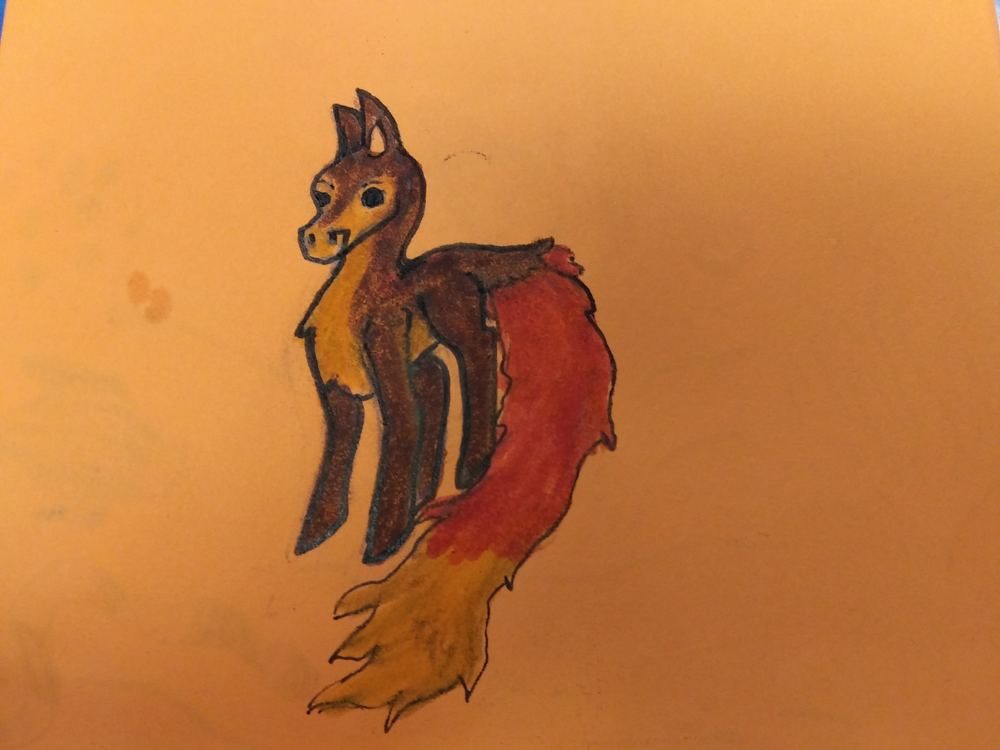
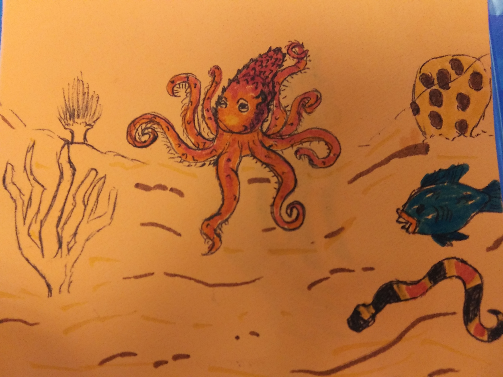
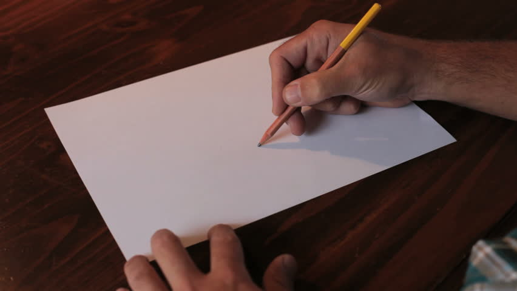

 DeerFox 
By:Celeste & Cheyenne Most of our projects are from UTSA's codrunner camp. This camp is for young girls who are interested in coding and engineering. In this camp we learned how to code and learned how to use our creativity to produce projects.
Some of our interests are drawing,reading,coding,animals,playing music,and speedpaints


As we are still growing we have had many ideas in what we want to do when we get older. Cheyenne has an interest of being a biologist. And Celeste is interested in many things. She wants to pursue a job in music and to teach younger kids how to play music themselves. She also wants to be a doctor and help others in need.
The videos below are of our robot winning a race and parallel parking.
The games you see down below are the games we coded ourselves. Feel free to try them out for yourselves.